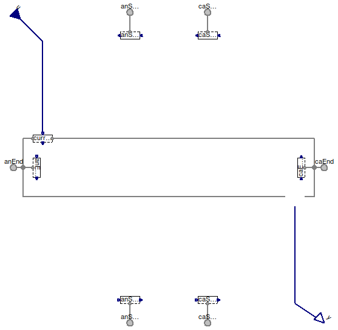
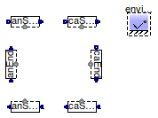

Table of Contents
- User's Guide
- Blocks
- Conditions
- Assemblies
- Regions
- Subregions
- Connectors
- Characteristics
- Units
- Quantities
- BaseClasses
Download
- Latest: FCSys-2.0.zip (**Please check back soon or contact kdavies4 at gmail.com.)

| Name | Description |
|---|---|
| Partial cell test stand | |
| PartialTestStandNoIO | Partial cell test stand without inputs/outputs |

| Type | Name | Default | Description |
|---|---|---|---|
| Boolean | inclIO | false | true, if input and output are included |
| FaceBus | current[n_y, n_z] | redeclare Conditions.ByConne… |
| Type | Name | Description |
|---|---|---|
| FaceBus | anEnd[n_y, n_z] | Anode end plate |
| FaceBus | caEnd[n_y, n_z] | Cathode end plate |
| FaceBus | anSource[n_x_an, n_z] | Anode source |
| FaceBus | anSink[n_x_an, n_z] | Anode sink |
| FaceBus | caSource[n_x_ca, n_z] | Cathode source |
| FaceBus | caSink[n_x_ca, n_z] | Cathode sink |
| RealInputBus | u[n_y, n_z] | |
| RealOutputBus | y[n_y, n_z] |
partial model PartialTestStand "Partial cell test stand" extends FCSys.BaseClasses.Icons.Names.Top9; extends Modelica.Icons.UnderConstruction; final parameter Integer n_x_an=1 "Number of subregions along the through-cell axis in anode FP (nx an)"; final parameter Integer n_x_ca=1 "Number of subregions along the through-cell axis in anode FP (nx ca)"; final parameter Integer n_y=1 "Number of subregions along the channel (ny)"; final parameter Integer n_z=1 "Number of subregions across the channel (nz)"; parameter Boolean inclIO=false "true, if input and output are included"; Connectors.FaceBus anEnd[n_y, n_z] "Anode end plate"; Connectors.FaceBus caEnd[n_y, n_z] "Cathode end plate"; Connectors.FaceBus anSource[n_x_an, n_z] "Anode source"; Connectors.FaceBus anSink[n_x_an, n_z] "Anode sink"; Connectors.FaceBus caSource[n_x_ca, n_z] "Cathode source"; Connectors.FaceBus caSink[n_x_ca, n_z] "Cathode sink"; Conditions.ByConnector.FaceBus.Single.FaceBusIsolated anEndBC[n_y, n_z](each graphite('inclC+'=true, 'incle-'=true)); Conditions.ByConnector.FaceBus.Single.FaceBusIsolated caEndBC[n_y, n_z](each graphite('inclC+'=true, 'incle-'=true)); Conditions.ByConnector.FaceBus.Single.FaceBusIsolated anSourceBC[n_x_an, n_z] (each gas(inclH2=true, inclH2O=true)); Conditions.ByConnector.FaceBus.Single.FaceBusIsolated anSinkBC[n_x_an, n_z]( each gas(inclH2=true, inclH2O=true)); Conditions.ByConnector.FaceBus.Single.FaceBusIsolated caSourceBC[n_x_ca, n_z] (each gas( inclH2O=true, inclN2=true, inclO2=true)); Conditions.ByConnector.FaceBus.Single.FaceBusIsolated caSinkBC[n_x_ca, n_z]( each gas( inclH2O=true, inclN2=true, inclO2=true)); Connectors.RealInputBus u[n_y, n_z] if inclIO; Connectors.RealOutputBus y[n_y, n_z] if inclIO; replaceable Conditions.ByConnector.FaceBus.Pair.FaceBus current[n_y, n_z]( graphite('inclC+'=true, 'incle-'=true)) if inclIO constrainedby FCSys.Conditions.ByConnector.FaceBus.Pair.FaceBus(graphite('inclC+'=true, 'incle-'=true)); equation connect(anSourceBC.face, anSource); connect(anSinkBC.face, anSink); connect(caSourceBC.face, caSource); connect(caSinkBC.face, caSink); connect(caEndBC.face, caEnd); connect(current.positive, caEnd); connect(current.negative, anEnd); connect(u, current.u); connect(voltage.negative, anEndBC.face); connect(caEnd, voltage.positive); connect(voltage.y, y); connect(anEndBC.face, anEnd); end PartialTestStand;

partial model PartialTestStandNoIO "Partial cell test stand without inputs/outputs" extends FCSys.BaseClasses.Icons.Names.Top9; extends Modelica.Icons.UnderConstruction; final parameter Integer n_x_an=1 "Number of subregions along the through-cell axis in anode FP (nx an)"; final parameter Integer n_x_ca=1 "Number of subregions along the through-cell axis in anode FP (nx ca)"; final parameter Integer n_y=1 "Number of subregions along the channel (ny)"; final parameter Integer n_z=1 "Number of subregions across the channel (nz)"; Conditions.ByConnector.FaceBus.Single.FaceBusIsolated anEnd[n_y, n_z](each graphite( 'inclC+'=true, 'incle-'=true, 'e-'(redeclare Face.Normal.CurrentAreic normal(redeclare Modelica.Blocks.Sources.Ramp source(height=U.A/U.cm^2, duration=50))))); Conditions.ByConnector.FaceBus.Single.FaceBusIsolated caEnd[n_y, n_z](each graphite( 'inclC+'=true, 'incle-'=true, 'e-'(redeclare Face.Normal.CurrentAreic normal(redeclare Modelica.Blocks.Sources.Ramp source(height=U.A/U.cm^2, duration=50))))); Conditions.ByConnector.FaceBus.Single.FaceBusIsolated anSource[n_x_an, n_z]( each gas(inclH2=true, inclH2O=true)); Conditions.ByConnector.FaceBus.Single.FaceBusIsolated anSink[n_x_an, n_z]( each gas(inclH2=true, inclH2O=true)); Conditions.ByConnector.FaceBus.Single.FaceBusIsolated caSource[n_x_ca, n_z]( each gas( inclH2O=true, inclN2=true, inclO2=true)); Conditions.ByConnector.FaceBus.Single.FaceBusIsolated caSink[n_x_ca, n_z]( each gas( inclH2O=true, inclN2=true, inclO2=true)); inner Environment environment; end PartialTestStandNoIO;